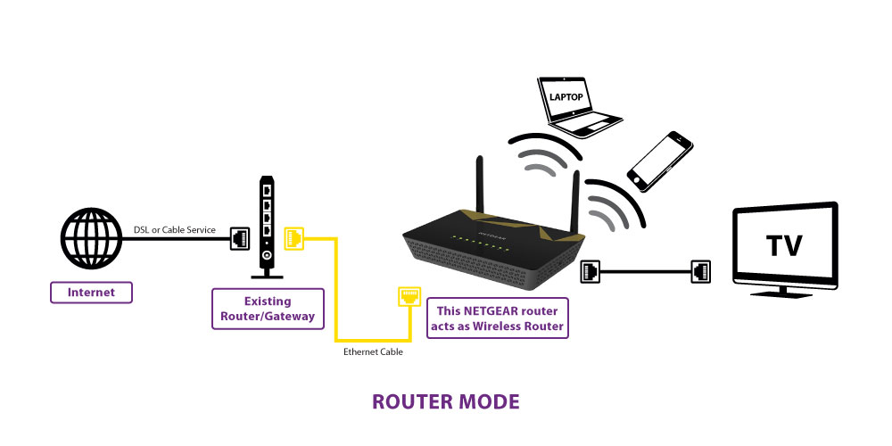
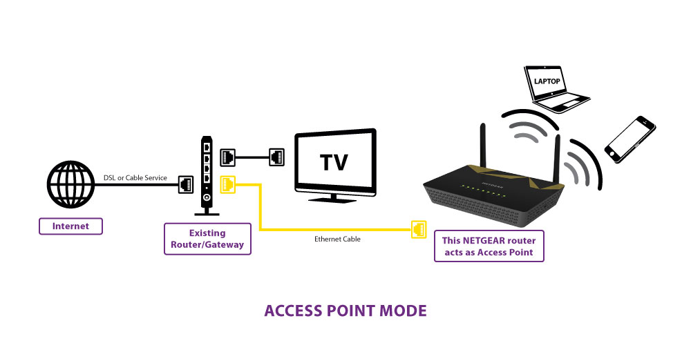

Router vs .Access Point
genie detected that you are trying to install your new NETGEAR router behind another gateway,for example your Internet provider DSL or cable gateway with WiFi or Voice over Internet(VoIP).You can install your NETGEAR router in two different operation modes.

router
This mode configures your new NETGEAR router as a normal WiFi router behind your gateway and create a separate WiFi network behind your gateway.To take full advantage of this router's advanced functions,NETGEAR recommends that you use router mode.In router mode,the only device that can be connected to your existing gateway is your new NETGEAR router.You must connect all of your devices to the new NETGEAR router.If your existing gateway has a WiFi function,disable it.
Some advanced functions like Remote Management still need configuration on the gateway.For more information,see your gateway's documentation.

Access Point
If you want to use the new router to get better WiFi performance beyond what you have with your existing gateway,access point mode is the easiest way to do that.NETGEAR recommends that you disable the WiFi function on your existing gateway,if it has WiFi functionality.With this mode,you can connect wired devices to the gateway and connect wired and WiFi devices to your new NETGEAR router.
In this mode ,by default,the new router's IP addressis assigned by your gateway dynamically and is unlikely to be 192.168.1.1.However,you can still use the URL http://www.routerlogin.net to access the router's management GUI from a device connected to the router.Some router functions are not available in this mode,and you must use router mode if you want to use those functions.